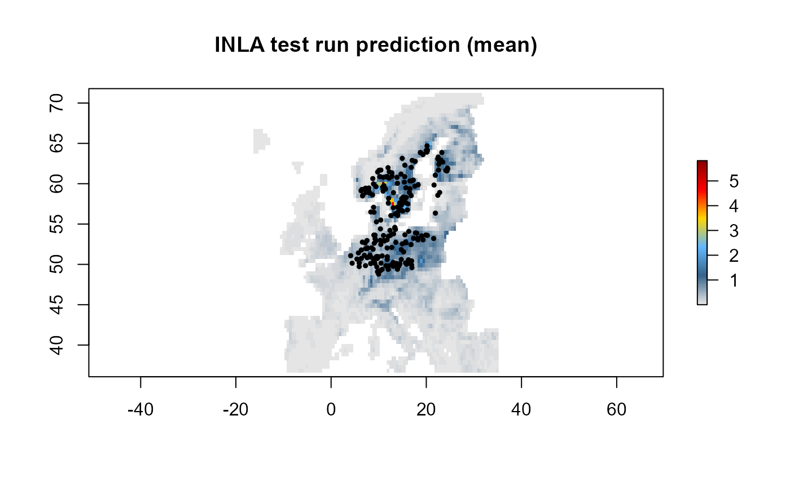
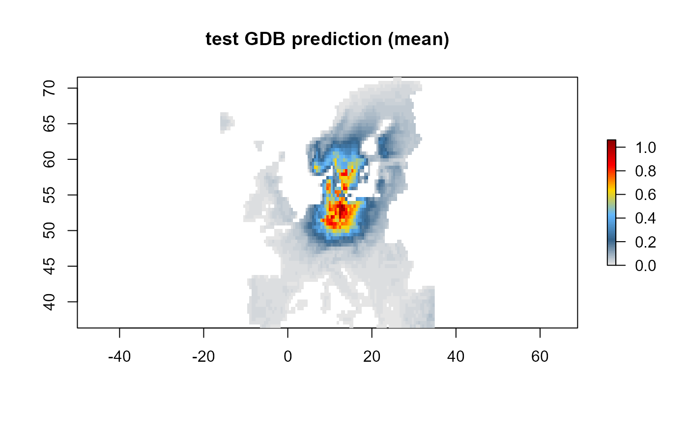

library(ibis.iSDM)
#> Spherical geometry (s2) switched off
library(raster)
library(sf)
# Background area for prediction
background <- raster::raster(system.file('extdata/europegrid_50km.tif', package='ibis.iSDM'))
# Get test species
virtual_points <- sf::st_read(system.file('extdata/input_data.gpkg', package='ibis.iSDM'),'points',quiet = TRUE)
virtual_range <- sf::st_read(system.file('extdata/input_data.gpkg', package='ibis.iSDM'),'range',quiet = TRUE)
# Get list of test predictors
ll <- list.files(system.file('extdata/predictors/',package = 'ibis.iSDM'),full.names = T)
predictors <- raster::stack(ll);names(predictors) <- tools::file_path_sans_ext(basename(ll))
# --- #
# Create a distribution object
x <- distribution(background) %>%
# Add the presence only points (poipo) as dataset
add_biodiversity_poipo(virtual_points,field_occurrence = 'Observed',name = 'Virtual points') %>%
# Add the environmental predictors and also scale them
add_predictors(predictors,transform = 'scale') %>%
# Use INLA with default parameters as fitting engine
engine_inla()
# print out the model information
print(x)Now train a model using INLA
# Train a Model with the chosen engine
mod <- train(x, runname = 'INLA test run',only_linear = TRUE)
#> Warning in sparse.model.matrix(object, data = data, contrasts.arg =
#> contrasts.arg, : variable 'int.strategy' is absent, its contrast will be ignored
#> Warning in sparse.model.matrix(object, data = data, contrasts.arg =
#> contrasts.arg, : variable 'int.strategy' is absent, its contrast will be ignored
#> Warning in points2grid(points, tolerance, round): grid has empty column/rows in
#> dimension 1
# Shows the strongest effect by direction
mod
# Summary of effects
summary(mod)
#> # A tibble: 11 x 8
#> variable mean sd `0.05quant` `0.5quant` `0.95quant` mode kld
#> <chr> <dbl> <dbl> <dbl> <dbl> <dbl> <dbl> <dbl>
#> 1 interce~ -2.57e+0 0.144 -2.81 -2.57 -2.34 -2.56 1.09e- 6
#> 2 aspect_~ 1.46e-1 0.242 -0.250 0.144 0.547 0.141 4.29e- 7
#> 3 bio03_m~ -4.72e-1 0.179 -0.766 -0.472 -0.176 -0.473 1.02e- 6
#> 4 bio19_m~ 4.32e-1 0.144 0.185 0.438 0.658 0.451 2.51e- 6
#> 5 CLC3_13~ 4.15e-2 0.0562 -0.0564 0.0446 0.129 0.0511 3.30e- 6
#> 6 CLC3_21~ 1.06e-2 0.161 -0.254 0.00960 0.278 0.00773 5.25e- 7
#> 7 CLC3_31~ 1.03e+0 0.107 0.852 1.03 1.20 1.02 3.75e- 7
#> 8 hmi_mea~ 1.33e+0 0.195 1.00 1.33 1.65 1.33 6.15e- 7
#> 9 koeppen~ 5.85e-1 0.208 0.249 0.581 0.933 0.574 1.11e- 7
#> 10 ndvi_me~ 8.29e-4 0.175 -0.284 -0.00147 0.293 -0.00604 4.63e-12
#> 11 slope_m~ -2.63e-1 0.149 -0.514 -0.260 -0.0244 -0.253 6.67e- 7
# Now plot the prediction
plot(mod)
plot(as(virtual_points,'Spatial'),pch = 19, cex = .5, add = TRUE)
Other datasets can be added to the call above as well as for instance specific latent factors [add_latent_spatial()] or offsets [add_range_offset()].
Equally it is possible to run poisson models with spatial latent effect on their (equivalent to a kernel density estimation) ### Alternative to INLA - Use Gradient Descent Boosting
# Use Gradient descent boosting engine for prediction
x <- distribution(background) %>%
add_biodiversity_poipo(virtual_points, field_occurrence = 'Observed', name = 'Virtual points') %>%
# No further transformation
add_predictors(predictors, transform = 'none',derivates = 'none') %>%
# Figured that we don't want the human modification index, so remove the variable again
rm_predictors('hmi_mean_50km') %>%
# Add latent spatial effect
add_latent_spatial() %>%
# Use GDB for estimation with very few iterations for testing
engine_gdb(boosting_iterations = 500,learning_rate = 0.1)
# Print the setup of data
x
# Train a model
mod2 <- train(x, runname = 'test GDB')
mod2
# Same as for INLA plot the mean prediction
plot(mod2)
# Plot the partial effects
effects(mod2)